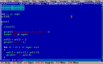
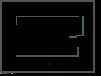

Thing is, I'm a hoarder when it comes to data on a computer. It turns out I still have those first programs stowed away in dusty corners of my PC. My programming in 1998 began with ESMS, which was then actively developed for years, so most of its code is new. But I also had dozens of small C and C++ programs trying various things. For example, here is the oldest I can find now, a (what else !) Fibonacci sequence generator, dated November 1998:
#include
#include
int i, j, inpt;
ar[20];
main()
{
clrscr();
printf("Enter number (1 to 20) ? ");
scanf("%d",& inpt);
ar[0] = ar[1] = 1;
printf("\n 1 1");
for (i = 2; i <= inpt; i++)
{
ar[i] = ar[i-1] + ar[i-2];
printf(" %d",ar[i]);
}
return 0;
}
It's hardly secure, allowing the user to easily overflow a buffer. Besides, if the user enters 20 (which is valid as far as the message says) it will also write outside the array bounds and might cause a crash (which almost never happens in DOS, of course). So, you shouldn't use this program in any production code, ok ?
Like all other programs from that era, it was developed in Borland Turbo C++ 3.0:
Anyway, when I tried to run "worm" (my "Snake" clone written in OO C++ in May 1999), it complained about the lack of evavga.bgi - Borland's graphics driver. This isn't surprising, given that this is the graphics initialization function in worm.cpp:
// Function for the initialization on the graphic driver
void InitializeGraphics(void)
{
// Auto detection request
int gdriver = DETECT, gmode, errorcode;
// Initialize graphics mode
initgraph(&gdriver;, &gmode;, "c:\\borlandc\\bgi\\");
// Read results of initialization
errorcode = graphresult();
// Check for errors
if (errorcode != grOk)
{
cout << "Graphics error: " << grapherrormsg(errorcode) << endl;
cout << "Press any key to halt";
getch();
exit(EXIT_FAILURE);
}
}
Note the hard-coded reference to the Borland installation in the call to initgraph. Priceless :-)
Another problem was taking a screenshot to post here. Because of Borland's graphics, the program insisted running in full window DOS mode, where I had trouble taking a screenshot. No problems, I invoked DOSBox which I previously used to run some nostalgic games like Dune 2, and it managed to run "worm" without a problem. So, here's the proof:
